Lab 4
Objective:
In this lab, I extracted and compute reliable, rapid data from an 3-axis Inertial Measurement Unit (IMU). Putting this sensor together with the TOF sensors from lab 3 and an RC vehicle, I collected, relayed, and visualized accelerometer, gyroscope, and TOF data.
IMU Setup
The IMU chip is ICM-20948, mounted on a Sparkfun breakout board. It is connected to the Artemis via a single Qwiic cable. The board's arduino library comes with example scripts to print its accelerometer, gyrosocpe, and magnetometer data over serial. Isolating the accelerometer (X, Y, Z) and gyroscope (X, Y, Z) respectively, I verified the example code works by tracking live movements of the board as follows:
The accelerometer visualization resembles the motion of the IMU very intuitively. As the board increases speed in an axis, the plot for that axis rises to a maxima. After the midpoint, as the board slows to a stop, the plot goes negative and reaches a minima. When the board is flipped, the acceleration due to Earth is naturally inverted, and the plot follows, without changes to the other plots. As the board is spun laterally, there is likewise no change, as the accelerometer does not measure a change in angle. This is instead the job of the gyroscope, whose visualization is far more chaotic and less intuitive to the motion of the IMU. We notice even the IMU at rest causes small fluctuations in all gyroscope measures. We notice that motion along axes doesn't affect any of these measures, but rotation along each causes a corresponding increase/decrease in its plot correpsonding to the speed of rotation.
In the example script, we note AD0_VAL is initialized as 1. This is as per the default described in the datasheet for the IMU chip for when the ADR jumper is not closed. As we were not to physically alter this pin, this default is accurate.
In order to identify when the Artemis is starting up, or has unexpected restarted, I added a start-up sequence: three blinks, with a period of 1 second.
Accelerometer
To determine the accuracy of the accelerometer, I placed it along the axis of a square box sitting on a flat table. Amending the example code to visualize pitch and roll, I substitued formulae from lecture:
As evident by the plot of the roll and pitch, the formula is sound and the accelerometer values are reasonably accurate but suffers from a degree of noise. The unequal error on the positive and negative ends of both roll and pitch (90 and -90 degrees) is also likely due to imperfections in the box, or my holding of the sensor. As below, the following errors are all slightly different and noisy, around +/- 1.5 degrees, and thus cannot be treated as a systematic error and corrected with two-point calibration. The first two screenshots are with the box at extreme pitches, the next two are extreme rolls. At 0 roll and pitch we have a similarly noisy readings, as seen in the video.
To explore the noise, I collected multiple 1-second windows of pitch and roll data, sent it over BLE to a Jupyter Notebook, and conducted fast fourier transforms. Transforming from time domain to frequency domain demosntrated that the frequency with the most noise was around 0.15Hz, without any notable spikes at frequencies up to 100Hz (half the sampling frequence of 200Hz), aligned with the 'low-noise mode' described in the datasheet. The code for the both ends of the process is below, and the graphs for pitch and roll below have been zoomed into the relevant sections:


Gyroscope:
Having concluded exploration of the accelerometer, the propsect of using gyroscope data to augment and improve accelerometer data was expored. In order to compare the angles measured by both, pitch and roll needed to be derived from the gyroscopes measured change in angle per unit time, and sent alongside accelerometer angles for visualization. The gyroscope also gives us an additional stream of data incapable of being recorded by the accelerometer: yaw.

From this graph we make some important observations. Both the pitch and roll for both sensors are nearly identical, however, the accelerometer's readings appear significantly noisier. Sampling was done at the same rate for both sensors, hence we know this is not a function of the accelerometer having less datapoints. We also notice that although both values begin identical, the gyroscope values gradually drift from the acclerometer values, and end separated by about 5 degrees. This is drift over the course of 10 seconds, suggesting longer reading durations would lead to more pronounced drift. All sampling frequencies resulted in very similar data (hence not presented).
Fusing the accelerometer and the gyroscope using a complementary filter, we get smooth readings that suffer far less to drift and sudden motions. In the plots below we experiment with first moving the sensor gently, then with abrupt quick motions between bound extremes, to demonstrate its resilience and range in both situations:
Single TOF Sensor Mode Testing:
I chose to test the sensor mode ‘DistanceShort’, with a maximum expected range of 1.3 metres. I chose this for two reasons. Firstly, I believe having a high degree of accuracy within this range would be essential to optimal obstacle avoidance as, given the small and agile nature of the robot, manoeuvres can be made closer to obstacles than less agile robots. The more important reason was the datasheet’s claim that this mode is far more resilient to changing ambient light conditions than its alternatives. This is important as we may not always have the ability to adjust ambient lighting, in a common workspace or outdoors for example. The datasheet claims the maximum viewable distance for the short distance mode TOFs in dark and under strong ambient light is roughly equal at ~135cm, whereas the medium and long distance drop off massively from 290cm to 76cm and 360cm to 73cm. While in some conditions these would offer greater localisation capabilities, this level of variability would be difficult to account for in all situations, and thus is best avoided.
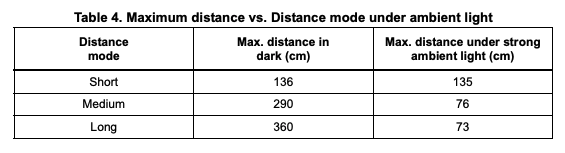
I tested the sensor mode for both its claims of maximum distance, and resilience to ambient light. I also tested the ranging time and repeatability under changing measured distance to determine what effect the mode would have on sampling delay. To test, I placed a measuring tape on the floor, leading up to a flat panel on one end, and the system mounted sturdily on a perpendicular mobile surface on the other end. By taking 50 samples at a given distance, then moving 15 centimetres closer/further from the flat panel, I collected data on a single TOF sensor at 14 distances from 5 centimetres to 200 centimetres inclusive. By relaying through bluetooth, I would be able to parse and visualise the data in a Jupiter Notebook using Numpy and Matplotlib.

To script this, I made a new command that read 50 TOF samples, relayed them individually to the Jupiter Notebook for parsing, then gave me 10 seconds to move the system to the next distance marker. Repeating 14 times, this allowed all my data to be collected in under 5 minutes. Below are snippets of the code to read TOF data (newReading()), send data (sendReading()) , and grant time for moving the setup (readAndSend50TOF()).
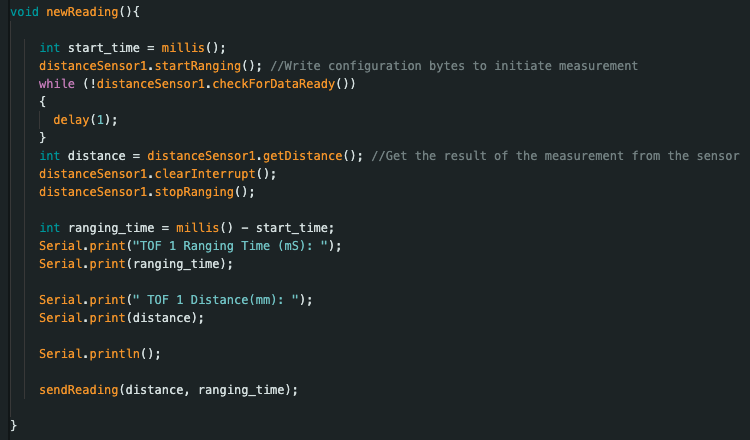
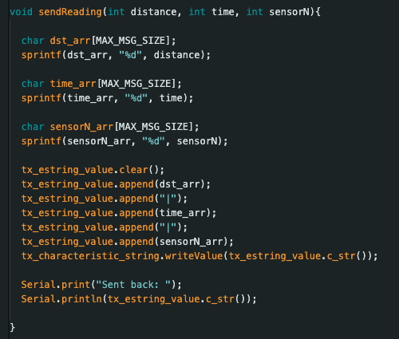
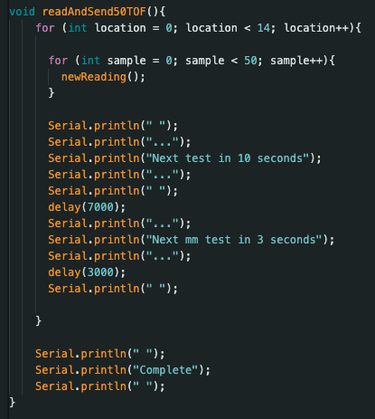
The results are summarised in the graphs below. While the legend isn’t very clear, the graph is telling. Up to ~1500 milimeters, in strong ambient light conditions, all 50 distance samples are highly similar and accurate to the true distance. After that point, the samples become more variable, and diverge slightly more from the ground truth. The maximum standard deviation for any distance was 1800mm with 32mm of deviation. I conclude this sensor is usable up to the measured 200 centimetres in most situations. The ranging time was as expected, with an average of ~53mS up to ~1350 millimeters , when it became a much quicker ~32mS. This is most likely a function of the precision sampling being done in the short distance mode up to that distance, as prescribed in the datasheet.
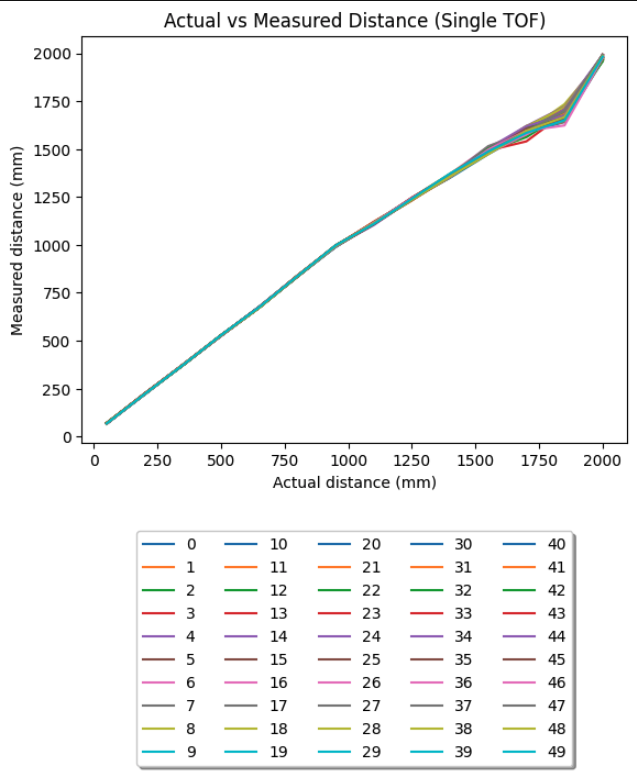
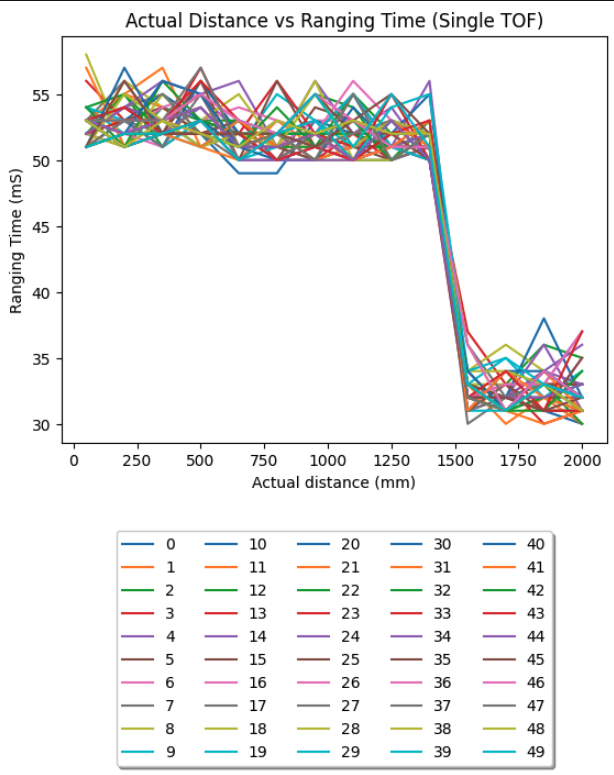
The dark testing is similar, with a non-negligible increase in the tightness of sampling at longer distances, accurate up to ~1750 millimetres as opposed to the ~1500 millimetres in the light testing. The number of samples taken decreased the likelihood this was the result of an experimental error, and hence I find the sensor functions more accurately and repeatably in the dark than under strong ambient light. The ranging times were effectively the same as in ambient light testing.
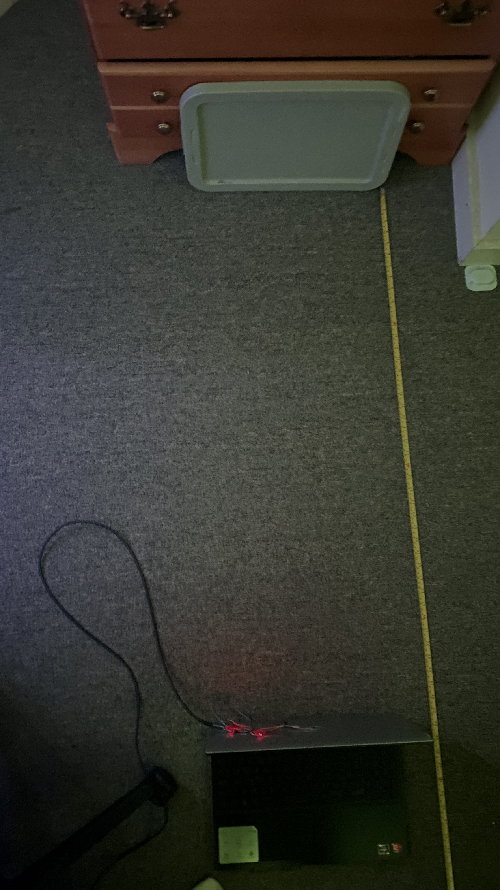
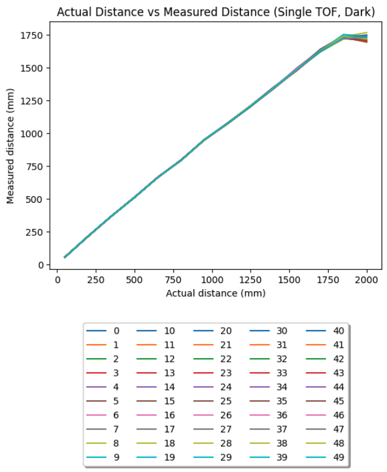


Two TOF Sensor Testing:
As explained prior, the method to use both TOFs at once, is to drive the XSHUT pin on one low while the other has its I2C address changed. We can then address them both individually and concurrently. I changed the address of one to 0x32, on guidance from TA Anya’s former lab3 page. Wiring as per the diagram from earlier, and placing pointing perpendicularly as they will on the car, I repeated the experiment structure from earlier under strong ambient light to produce the following graphs:
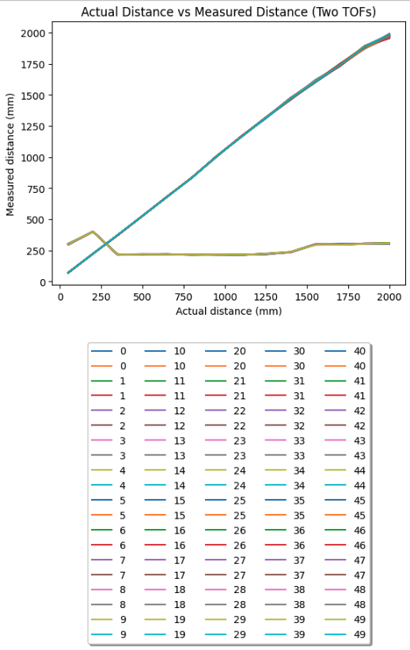

We see that while the distance from the front sensor was being uniformly increased, the proximity to my bed and a walkway caused the other TOF to read varying distances, again very precisely within the aforementioned range. In order to account for the additional TOF sensor, I simply amended the script read, send, and parsing scripts on both ends as follows:
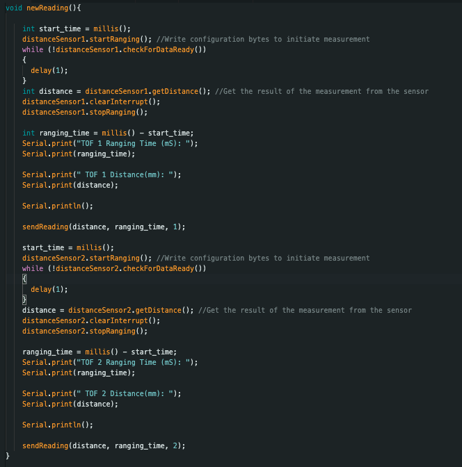
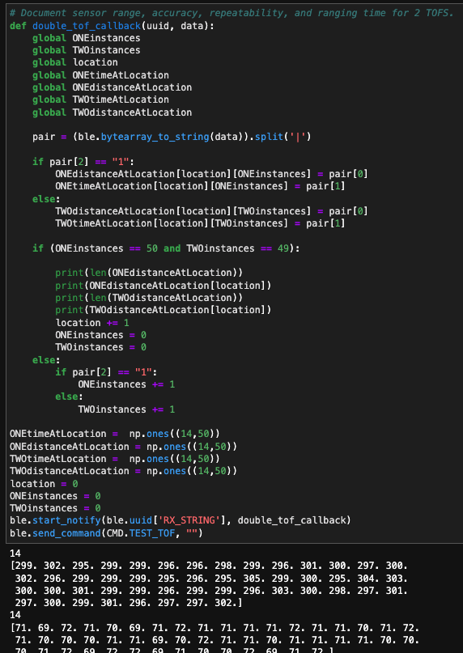
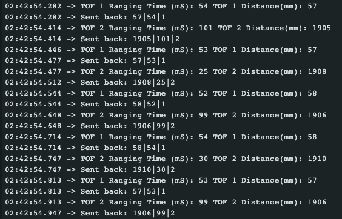
Two TOF Speed:
In order to maximise the rate of execution for the two TOFs, I changed the Artemis-side script to avoid the busy wait condition during ranging given in the example script. Instead, I simply run the checkForDataReady() method of the distanceSensor class on each sensor, and poll for new samples. As shown below, there were many iterations of the loop when neither sensor had a new sample, and so only the timestamp was printed. From this we see the execution time of the loop was ~7 mS, with a new pair of sensor readings approximately every ~50 mS separated by ~15mS. I believe the current limiting factor in the speed of this loop is the checkForDataReady function itself, and the time it takes to Serial print the current time/ new samples. I conclude this as there are no other lines in the loop that could consume excess time.
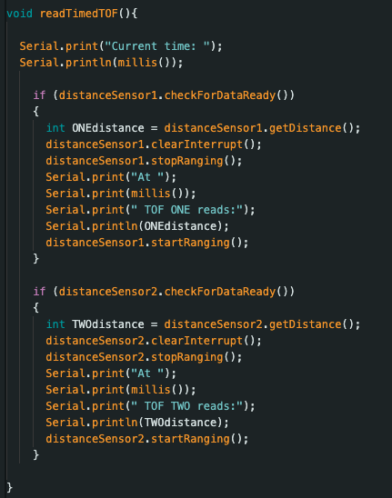

Two TOF Readings:
The benefit of the new reading method for the two TOFs is that data can be collected relatively asynchronously, and not halt the script in between. Changing the data sent from the Artemis to the Notebook to include current time rather than ranging time, and simplifying the visualisation script, yielded this graph:
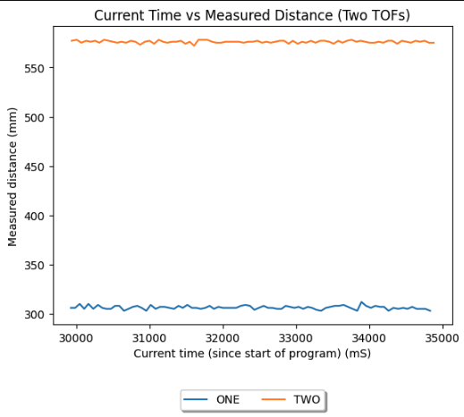
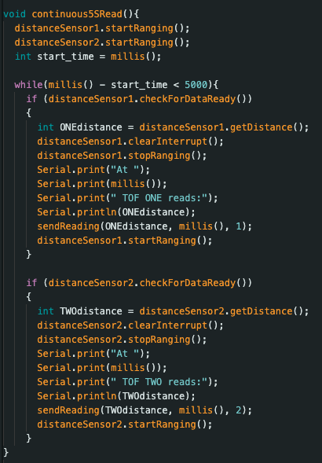

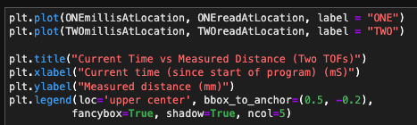